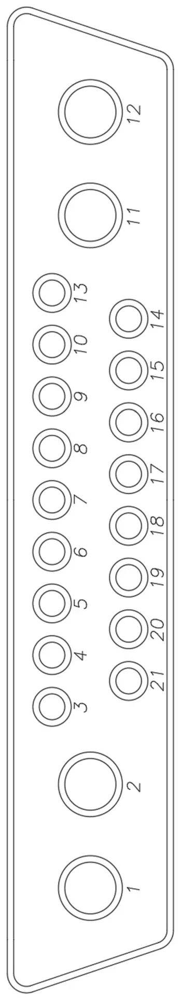

These pages record how the Rhino is wired to its Big Tree Tech Octopus v1.1 controller: the 21 contacts of the umbilical, the board pins that stay on the machine, every stepper driver, and the wiring diagrams for the special cases. Blank rows and cards are for your own additions.
printer.cfg disagree, Klipper follows printer.cfg. The differences found while preparing this manual are listed in Still to check on the machine.| Umbilical pin | Board pin | Function | Board label |
|---|---|---|---|
| 1 | PA2 + | Hotend heater | HE0 |
| 2 | – | Hotend heater | |
| 3 | PF4 – | Hotend thermistor | T0 |
| 4 | + | Hotend thermistor | |
| 5 | PE5 | Hotend fan | Fan0 |
| 6 | – | Hotend fan | |
| 7 | A1 | Stepper A1 | Motor2 |
| 8 | A2 | Stepper A2 | |
| 9 | B1 | Stepper B1 | |
| 10 | B2 | Stepper B2 | |
| 11 | PA1 + | 24 V power activate | Bed Out |
| 12 | – | 24 V power activate | |
| 13 | – | Probe | Probe |
| 14 | + | Probe | |
| 15 | PG10 | Probe signal | |
| 16 | PB0 | Laser PWM (5 V required) | RGB |
| 17 | |||
| 18 | PB11 | PWM signal 24 V –, ESC signal to GND pin | |
| 19 | |||
| 20 | PD12 + | 12 V power activate + | Fan2 |
| 21 | – | 12 V power activate – |
| Umbilical constant connections | Board pin |
|---|---|
| X-limit switch | PG6 |
| Chamber temperature | PF5 |
| Umbilical LED | PD14 |

| Pin | Wire colour |
|---|---|
| 1 | |
| 2 | |
| 3 | |
| 4 | |
| 5 | |
| 6 | |
| 7 | |
| 8 | |
| 9 | |
| 10 | |
| 11 | |
| 12 | |
| 13 | |
| 14 | |
| 15 | |
| 16 | |
| 17 | |
| 18 | |
| 19 | |
| 20 | |
| 21 |
Record the wire colour on each contact of your umbilical as you build it.
| Pin | Description | Board label |
|---|---|---|
| PA8 | Part cooling fan PWM Power provided through an always-on port of the Octopus board | Fan5 |
| Driver cooling fan PWM Power provided through an always-on port of the Octopus board | ||
| PA3 | Bed 0 power | HE1 |
| PD14 | Umbilical LED | Fan4 |
| PF3 | Bed temperature | TB |
| PF5 | Chamber temperature | T1 |
| PG6 | X limit | |
| PG9 | Y limit | |
| Z max | ||
| Pin | Description | |||
|---|---|---|---|---|
| Driver type and manufacturer BTT TMC2240 | |
| SPI / UART | |
| Run current | 1.1 A |
| Board socket 0 | |
| Step | PF13 |
| Dir | PF12 |
| Enable | PF14 |
| CS / UART | PC4 |
| Driver type and manufacturer BTT TMC2240 | |
| SPI / UART | |
| Run current | 1.1 A |
| Board socket 1 | |
| Step | PG0 |
| Dir | PG1 |
| Enable | PF15 |
| CS / UART | PD11 |
| Driver type and manufacturer BTT TMC2240 | |
| SPI / UART | |
| Run current | 0.8 A |
| Board socket 4 | |
| Step | PF9 |
| Dir | PF10 |
| Enable | PG2 |
| CS / UART | PF2 |
| Driver type and manufacturer BTT TMC2208 v3.0 | |
| SPI / UART | |
| Run current | 0.65 A |
| Board socket 5 | |
| Step | PE6 |
| Dir | PA14 |
| Enable | PE0 |
| CS / UART | PD3 |
| Driver type and manufacturer BTT TMC2208 v3.0 | |
| SPI / UART | |
| Run current | 0.8 A |
| Board socket 6 | |
| Step | PC13 |
| Dir | PF0 |
| Enable | PF1 |
| CS / UART | PE4 |
| Driver type and manufacturer BTT TMC2208 v3.0 | |
| SPI / UART | |
| Run current | 0.8 A |
| Board socket 7 | |
| Step | PE2 |
| Dir | PE3 |
| Enable | PD4 |
| CS / UART | PE1 |
| Driver type and manufacturer BTT TMC2240 | |
| SPI / UART | |
| Run current | 0.8 A |
| Board socket | |
| Step | |
| Dir | |
| Enable | |
| CS / UART | |
| Driver type and manufacturer BTT TMC2240 | |
| SPI / UART | |
| Run current | 0.8 A |
| Board socket | |
| Step | |
| Dir | |
| Enable | |
| CS / UART | |
| Driver type and manufacturer | |
| SPI / UART | |
| Run current | |
| Board socket | |
| Step | |
| Dir | |
| Enable | |
| CS / UART | |
| Driver type and manufacturer | |
| SPI / UART | |
| Run current | |
| Board socket | |
| Step | |
| Dir | |
| Enable | |
| CS / UART | |